🌙 수면음악 보관함
매주 화·금 저녁 새 영상(2~3시간)과 쇼츠가 자동으로 올라옵니다. 영상 받기 → 사진 앱에 저장 → YouTube 앱에서 업로드 → 제목·설명 복사해서 붙여 넣기 → 썸네일 지정
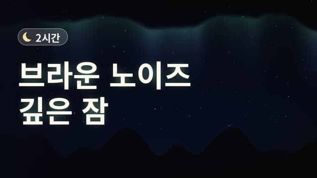
🌌 브라운 노이즈 2시간 | 공부 · 집중 · 숙면을 위한 소리
2026-11-25 · 120분 · 281MB아동용 아님

업로드 설정 → 시청자층: 아니요, 아동용이 아닙니다 · 카테고리: 음악 · 썸네일: 위에서 받은 이미지
🌌 브라운 노이즈 2시간 | 공부 · 집중 · 숙면을 위한 소리브라운 노이즈, brown noise, 백색소음, 수면 소음, 집중 소음, 숙면, 공부할때 듣는, 수면음악, 이명, 1시간설명 보기
낮고 부드러운 브라운 노이즈입니다. 주변 소음을 덮어 주어 잠들기, 집중, 휴식에 좋아요. 음악이나 말소리는 없습니다. 🌙 2시간 동안 끊김 없이 이어지고, 시작은 천천히 커지고 마지막 1분은 소리가 서서히 작아져 잠을 깨우지 않아요. 💤 화면 밝기를 낮추고, 볼륨은 작게 틀어 주세요. ━━━━━━━━━━ 🎵 음원·영상 안내 이 영상의 음악, 자연의 소리, 배경 영상은 모두 이 채널에서 직접 프로그램으로 작곡·합성·제작한 창작물입니다. 외부 음원이나 샘플, 스톡 영상을 사용하지 않았습니다. 🔔 매주 화요일·금요일 저녁, 새 수면음악이 올라옵니다. 구독하고 함께 푹 자요. 👉 https://www.youtube.com/channel/UCV2yZPs2ZaFXZE3x-gXfFBg?sub_confirmation=1 📺 같이 보면 좋은 채널 · 이상한 이야기 귀담 — 잠들기 전 듣는 실화 괴담·미스터리 https://www.youtube.com/@귀담스토리 · 세상의 모든 이야기 — 매일 1분 경제·생활 뉴스 https://www.youtube.com/@세상의모든이야기g1-c #브라운노이즈 #brownnoise #백색소음 #수면소음 #집중소음 #숙면 #공부할때듣는 #수면음악
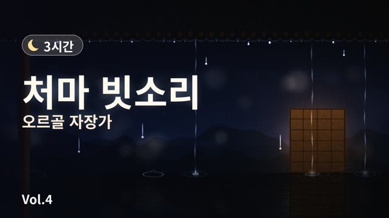
🌧️ 처마 빗소리 오르골 자장가 3시간 | 아기 잠 잘 오는 음악 · 수면음악 Vol.4
2026-11-20 · 180분 · 414MB아동용으로 설정

업로드 설정 → 시청자층: 예, 아동용입니다 · 카테고리: 음악 · 썸네일: 위에서 받은 이미지
🌧️ 처마 빗소리 오르골 자장가 3시간 | 아기 잠 잘 오는 음악 · 수면음악 Vol.4빗소리 자장가, 오르골 자장가, 아기 수면음악, 자장가, 빗소리, 수면음악, 잠 잘오는 음악, 아기 잠재우기, lullaby, rain sounds설명 보기
처마 끝에서 똑똑 떨어지는 빗방울 소리 위로, 매번 새로 작곡한 오르골과 하프 자장가가 천천히 흘러갑니다. 🌙 3시간 동안 끊김 없이 이어지고, 시작은 천천히 커지고 마지막 1분은 소리가 서서히 작아져 잠을 깨우지 않아요. 🎧 1분 30초마다 장면이 천천히 바뀌고, 그 장면의 소리도 함께 바뀝니다: 한옥 처마(처마 빗방울·빗소리) → 비 오는 창(빗소리) → 아기 방(핑크 노이즈·괘종시계) → 비 오는 연못(나뭇잎 빗소리·처마 빗방울) 🎼 이번 영상의 곡: 새로 작곡한 곡 69곡 — 오르골 솔 리디안 3/4박자 ♩=61, 하프 파 5음계 4/4박자 ♩=51, 오르골 돌림노래 솔 장조 4/4박자 ♩=62 등 🎻 악기: 오르골 · 하프 💤 화면 밝기를 낮추고, 볼륨은 작게 틀어 주세요. ━━━━━━━━━━ 🎵 음원·영상 안내 이 영상의 음악, 자연의 소리, 배경 영상은 모두 이 채널에서 직접 프로그램으로 작곡·합성·제작한 창작물입니다. 외부 음원이나 샘플, 스톡 영상을 사용하지 않았습니다. 🔔 매주 화요일·금요일 저녁, 새 수면음악이 올라옵니다. 구독하고 함께 푹 자요. 👉 https://www.youtube.com/channel/UCV2yZPs2ZaFXZE3x-gXfFBg?sub_confirmation=1 📺 같이 보면 좋은 채널 · 이상한 이야기 귀담 — 잠들기 전 듣는 실화 괴담·미스터리 https://www.youtube.com/@귀담스토리 · 세상의 모든 이야기 — 매일 1분 경제·생활 뉴스 https://www.youtube.com/@세상의모든이야기g1-c #빗소리자장가 #오르골자장가 #아기수면음악 #자장가 #빗소리 #수면음악 #잠잘오는음악 #아기잠재우기
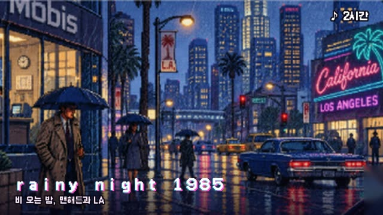
ｒａｉｎｙ ｎｉｇｈｔ １９８５ 🌃 1985 뉴욕에서 LA까지, 비 오는 밤 2시간 | 80년대 신스웨이브 · 빗소리 드림코어 수면음악
2026-11-19 · 120분 · 1727MB아동용 아님

업로드 설정 → 시청자층: 아니요, 아동용이 아닙니다 · 카테고리: 음악 · 썸네일: 위에서 받은 이미지
ｒａｉｎｙ ｎｉｇｈｔ １９８５ 🌃 1985 뉴욕에서 LA까지, 비 오는 밤 2시간 | 80년대 신스웨이브 · 빗소리 드림코어 수면음악신스웨이브, synthwave, 드림코어, dreamcore, 빗소리, rain, 80년대, 1985, 뉴욕, 맨해튼, LA, 로스앤젤레스, 레트로, retrowave, 로파이, lofi, 도트, 픽셀아트, 수면음악, VHS설명 보기
1985년, 비 내리는 LA 거리의 네온과 트렌치코트, 창밖으로 비가 내리는 맨해튼의 오래된 사무실, 그리고 노을 속 야자수. 빗소리 위로 흐르는 80년대 신스웨이브 드림코어 수면음악입니다. 🌙 2시간 동안 끊김 없이 이어지고, 시작은 천천히 커지고 마지막 1분은 소리가 서서히 작아져 잠을 깨우지 않아요. 🎧 1분 30초마다 장면이 천천히 바뀌고, 그 장면의 소리도 함께 바뀝니다: 비 오는 LA 거리(빗소리·먼 도시 소리) → 비 오는 맨해튼 사무실(빗소리·LP 잡음) → 노을과 비, LA(빗소리·바람) 🎼 이번 영상의 곡: 새로 작곡한 곡 43곡 — 일렉피아노 드림웨이브 솔 리디안 4/4박자 ♩=62, 일렉피아노 솔 리디안 앰비언트 (박자 없음), 일렉피아노 드림웨이브 레 장조 4/4박자 ♩=70 등 🎻 악기: 일렉피아노 · 신스 패드 · 신스 리드 · 서브 베이스 · 비브라폰 💤 화면 밝기를 낮추고, 볼륨은 작게 틀어 주세요. ━━━━━━━━━━ 🎵 음원·영상 안내 이 영상의 음악, 자연의 소리, 배경 영상은 모두 이 채널에서 직접 프로그램으로 작곡·합성·제작한 창작물입니다. 외부 음원이나 샘플, 스톡 영상을 사용하지 않았습니다. 🔔 매주 화요일·금요일 저녁, 새 수면음악이 올라옵니다. 구독하고 함께 푹 자요. #신스웨이브 #synthwave #드림코어 #dreamcore #빗소리 #rain #80년대 #1985
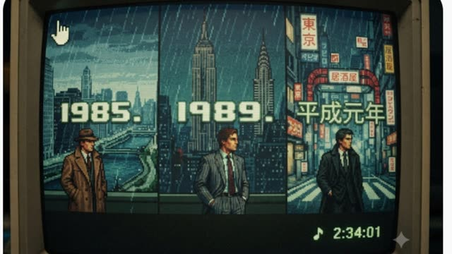
ｔｏｋｙｏ ｒａｉｎ １９８９ 🌧️ 1989 도쿄, 비 오는 퇴근길 2시간 34분 | 비 오는 시티팝 · 드림코어 로파이 수면음악
2026-11-19 · 154분 · 1189MB아동용 아님

업로드 설정 → 시청자층: 아니요, 아동용이 아닙니다 · 카테고리: 음악 · 썸네일: 위에서 받은 이미지
ｔｏｋｙｏ ｒａｉｎ １９８９ 🌧️ 1989 도쿄, 비 오는 퇴근길 2시간 34분 | 비 오는 시티팝 · 드림코어 로파이 수면음악시티팝, city pop, 드림코어, dreamcore, 빗소리, rain, 80년대, 1989, 도쿄, 신주쿠, 로파이, lofi, 베이퍼웨이브, vaporwave, 도트, 픽셀아트, pixel art, 수면음악, sleep music, VHS설명 보기
1989년, 헤이세이가 막 시작된 도쿄. 네온 간판이 빛나는 신주쿠 거리와 오래된 오피스 골목에 밤비가 조용히 내립니다. 빗소리와 함께 흐르는 80년대 신스·일렉피아노 드림코어 수면음악입니다. 🌙 2시간 34분 동안 끊김 없이 이어지고, 시작은 천천히 커지고 마지막 1분은 소리가 서서히 작아져 잠을 깨우지 않아요. 🎧 1분 30초마다 장면이 천천히 바뀌고, 그 장면의 소리도 함께 바뀝니다: 비 오는 신주쿠(빗소리·먼 도시 소리) → 비 오는 도쿄 오피스 거리(빗소리·먼 도시 소리) 🎼 이번 영상의 곡: 새로 작곡한 곡 64곡 — 일렉피아노 드림웨이브 시 장조 4/4박자 ♩=63, 일렉피아노 드림웨이브 미 리디안 4/4박자 ♩=66, 일렉피아노 드림웨이브 파 장조 4/4박자 ♩=59 등 🎻 악기: 일렉피아노 · 신스 패드 · 비브라폰 · 서브 베이스 · 신스 리드 · 유리 종 💤 화면 밝기를 낮추고, 볼륨은 작게 틀어 주세요. ━━━━━━━━━━ 🎵 음원·영상 안내 이 영상의 음악, 자연의 소리, 배경 영상은 모두 이 채널에서 직접 프로그램으로 작곡·합성·제작한 창작물입니다. 외부 음원이나 샘플, 스톡 영상을 사용하지 않았습니다. 🔔 매주 화요일·금요일 저녁, 새 수면음악이 올라옵니다. 구독하고 함께 푹 자요. #시티팝 #citypop #드림코어 #dreamcore #빗소리 #rain #80년대 #1989
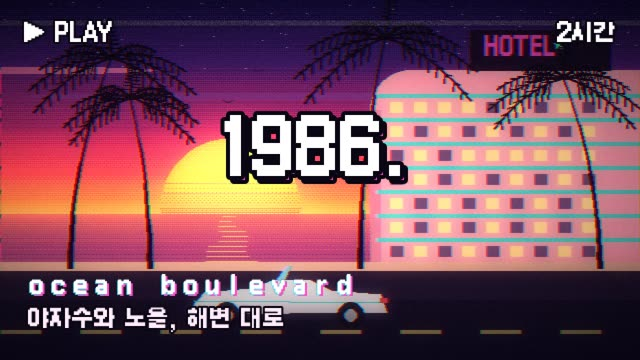
ｏｃｅａｎ ｂｏｕｌｅｖａｒｄ 🌴 1986 해변 대로, 야자수와 노을 2시간 | 80년대 아웃런 · 신스웨이브 수면음악
2026-11-18 · 120분 · 1609MB아동용 아님

업로드 설정 → 시청자층: 아니요, 아동용이 아닙니다 · 카테고리: 음악 · 썸네일: 위에서 받은 이미지
ｏｃｅａｎ ｂｏｕｌｅｖａｒｄ 🌴 1986 해변 대로, 야자수와 노을 2시간 | 80년대 아웃런 · 신스웨이브 수면음악신스웨이브, synthwave, 아웃런, outrun, 80년대, 1980s, 레트로, retrowave, 마이애미, 야자수, 노을, 시티팝, 수면음악, vaporwave, VHS, 도트설명 보기
1986년 여름, 줄무늬 노을 해가 바다로 내려앉는 해변 대로. 야자수가 바람에 흔들리고 호텔 네온이 하나둘 켜집니다. 파도 소리 위로 흐르는 80년대 신스웨이브 수면음악이에요. 🌙 2시간 동안 끊김 없이 이어지고, 시작은 천천히 커지고 마지막 1분은 소리가 서서히 작아져 잠을 깨우지 않아요. 🎧 1분 30초마다 장면이 천천히 바뀌고, 그 장면의 소리도 함께 바뀝니다: 80년대 해변 대로(파도·바람) → 밤의 고속도로 드라이브(브라운 노이즈·바람) → 버블 시대 맨션의 노을(LP 잡음·먼 도시 소리) 🎼 이번 영상의 곡: 새로 작곡한 곡 43곡 — 일렉피아노 드림웨이브 미 리디안 4/4박자 ♩=62, 일렉피아노 드림웨이브 레 장조 4/4박자 ♩=71, 일렉피아노 미 장조 앰비언트 (박자 없음) 등 🎻 악기: 일렉피아노 · 신스 패드 · 신스 리드 · 서브 베이스 💤 화면 밝기를 낮추고, 볼륨은 작게 틀어 주세요. ━━━━━━━━━━ 🎵 음원·영상 안내 이 영상의 음악, 자연의 소리, 배경 영상은 모두 이 채널에서 직접 프로그램으로 작곡·합성·제작한 창작물입니다. 외부 음원이나 샘플, 스톡 영상을 사용하지 않았습니다. 🔔 매주 화요일·금요일 저녁, 새 수면음악이 올라옵니다. 구독하고 함께 푹 자요. #신스웨이브 #synthwave #아웃런 #outrun #80년대 #1980s #레트로 #retrowave
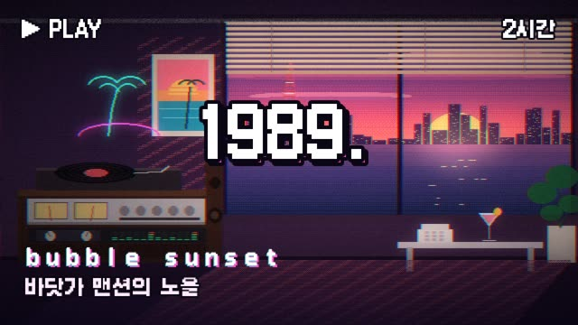
ｂｕｂｂｌｅ ｓｕｎｓｅｔ 🌇 1989 버블 시대, 바닷가 맨션의 노을 2시간 | 시티팝 · 레트로 로파이 · 잠들기 전 음악
2026-11-18 · 120분 · 1574MB아동용 아님

업로드 설정 → 시청자층: 아니요, 아동용이 아닙니다 · 카테고리: 음악 · 썸네일: 위에서 받은 이미지
ｂｕｂｂｌｅ ｓｕｎｓｅｔ 🌇 1989 버블 시대, 바닷가 맨션의 노을 2시간 | 시티팝 · 레트로 로파이 · 잠들기 전 음악시티팝, city pop, 버블 시대, 80년대, 90년대, 레트로, retro, 로파이, lofi, LP, 턴테이블, 노을, 수면음악, vaporwave, VHS, 도트설명 보기
1989년, 버블 시대의 바닷가 맨션. 블라인드 사이로 노을빛 줄무늬가 들어오고, 턴테이블 위 레코드와 오디오의 VU 미터가 천천히 흔들립니다. LP 잡음과 함께 듣는 느린 시티팝 수면음악이에요. 🌙 2시간 동안 끊김 없이 이어지고, 시작은 천천히 커지고 마지막 1분은 소리가 서서히 작아져 잠을 깨우지 않아요. 🎧 1분 30초마다 장면이 천천히 바뀌고, 그 장면의 소리도 함께 바뀝니다: 버블 시대 맨션의 노을(LP 잡음·먼 도시 소리) → 80년대 해변 대로(파도·바람) → 밤의 고속도로 드라이브(브라운 노이즈·바람) 🎼 이번 영상의 곡: 새로 작곡한 곡 50곡 — 일렉피아노 드림웨이브 도 믹솔리디안 4/4박자 ♩=71, 일렉피아노 드림웨이브 솔 리디안 4/4박자 ♩=55, 일렉피아노 드림웨이브 시 믹솔리디안 4/4박자 ♩=69 등 🎻 악기: 일렉피아노 · 신스 패드 · 비브라폰 · 서브 베이스 · 유리 종 · 신스 리드 💤 화면 밝기를 낮추고, 볼륨은 작게 틀어 주세요. ━━━━━━━━━━ 🎵 음원·영상 안내 이 영상의 음악, 자연의 소리, 배경 영상은 모두 이 채널에서 직접 프로그램으로 작곡·합성·제작한 창작물입니다. 외부 음원이나 샘플, 스톡 영상을 사용하지 않았습니다. 🔔 매주 화요일·금요일 저녁, 새 수면음악이 올라옵니다. 구독하고 함께 푹 자요. #시티팝 #citypop #버블시대 #80년대 #90년대 #레트로 #retro #로파이
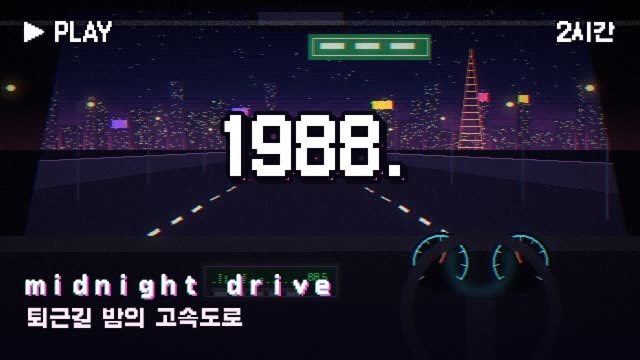
ｍｉｄｎｉｇｈｔ ｄｒｉｖｅ 🌃 1988 도쿄, 퇴근길 밤의 고속도로 2시간 | 시티팝 · 80년대 드림웨이브 수면음악
2026-11-18 · 120분 · 1576MB아동용 아님

업로드 설정 → 시청자층: 아니요, 아동용이 아닙니다 · 카테고리: 음악 · 썸네일: 위에서 받은 이미지
ｍｉｄｎｉｇｈｔ ｄｒｉｖｅ 🌃 1988 도쿄, 퇴근길 밤의 고속도로 2시간 | 시티팝 · 80년대 드림웨이브 수면음악시티팝, city pop, 80년대 음악, 1980s, 버블 시대, 베이퍼웨이브, vaporwave, 신스웨이브, synthwave, 레트로, 드라이브 음악, 퇴근길 음악, 수면음악, lofi, VHS, 도트설명 보기
1988년 도쿄, 야근을 마치고 올라탄 밤의 고속도로. 네온 간판과 붉은 철탑이 창밖으로 흐르고, 카오디오에서는 오래된 카세트가 돌아갑니다. 80년대 신스와 일렉피아노로 새로 작곡한 시티팝풍 수면음악이에요. 🌙 2시간 동안 끊김 없이 이어지고, 시작은 천천히 커지고 마지막 1분은 소리가 서서히 작아져 잠을 깨우지 않아요. 🎧 1분 30초마다 장면이 천천히 바뀌고, 그 장면의 소리도 함께 바뀝니다: 밤의 고속도로 드라이브(브라운 노이즈·바람) → 버블 시대 맨션의 노을(LP 잡음·먼 도시 소리) → 80년대 해변 대로(파도·바람) 🎼 이번 영상의 곡: 새로 작곡한 곡 52곡 — 일렉피아노 드림웨이브 레 리디안 4/4박자 ♩=70, 일렉피아노 드림웨이브 솔 리디안 4/4박자 ♩=64, 일렉피아노 드림웨이브 파 장조 4/4박자 ♩=59 등 🎻 악기: 일렉피아노 · 신스 패드 · 신스 리드 · 서브 베이스 · 비브라폰 💤 화면 밝기를 낮추고, 볼륨은 작게 틀어 주세요. ━━━━━━━━━━ 🎵 음원·영상 안내 이 영상의 음악, 자연의 소리, 배경 영상은 모두 이 채널에서 직접 프로그램으로 작곡·합성·제작한 창작물입니다. 외부 음원이나 샘플, 스톡 영상을 사용하지 않았습니다. 🔔 매주 화요일·금요일 저녁, 새 수면음악이 올라옵니다. 구독하고 함께 푹 자요. #시티팝 #citypop #80년대음악 #1980s #버블시대 #베이퍼웨이브 #vaporwave #신스웨이브
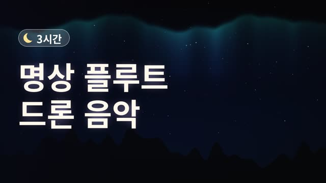
🧘 명상 플루트 드론 3시간 | 깊은 호흡 · 명상 · 수면
2026-11-17 · 180분 · 343MB아동용 아님

업로드 설정 → 시청자층: 아니요, 아동용이 아닙니다 · 카테고리: 음악 · 썸네일: 위에서 받은 이미지
🧘 명상 플루트 드론 3시간 | 깊은 호흡 · 명상 · 수면명상음악, 플루트, 드론 음악, 수면음악, 요가음악, 싱잉볼, 핸드팬, meditation music, deep sleep, 마음 안정설명 보기
낮게 깔린 현악 드론 위로 플루트·핸드팬·싱잉볼이 박자 없이 천천히 노래합니다. 명상과 깊은 잠을 위한 음악이에요. 🌙 3시간 동안 끊김 없이 이어지고, 시작은 천천히 커지고 마지막 1분은 소리가 서서히 작아져 잠을 깨우지 않아요. 🎧 1분 30초마다 장면이 천천히 바뀌고, 그 장면의 소리도 함께 바뀝니다: 오로라(바람) → 달빛 시냇물(시냇물·귀뚜라미) → 달빛 대숲(대나무 부딪힘·바람) → 밤하늘(바람·귀뚜라미) 🎼 이번 영상의 곡: 새로 작곡한 곡 54곡 — 플루트 레 리디안 앰비언트 (박자 없음), 핸드팬 파 도리안 4/4박자 ♩=45, 싱잉볼 도 도리안 앰비언트 (박자 없음) 등 🎻 악기: 플루트 · 핸드팬 · 싱잉볼 💤 화면 밝기를 낮추고, 볼륨은 작게 틀어 주세요. ━━━━━━━━━━ 🎵 음원·영상 안내 이 영상의 음악, 자연의 소리, 배경 영상은 모두 이 채널에서 직접 프로그램으로 작곡·합성·제작한 창작물입니다. 외부 음원이나 샘플, 스톡 영상을 사용하지 않았습니다. 🔔 매주 화요일·금요일 저녁, 새 수면음악이 올라옵니다. 구독하고 함께 푹 자요. #명상음악 #플루트 #드론음악 #수면음악 #요가음악 #싱잉볼 #핸드팬 #meditationmusic
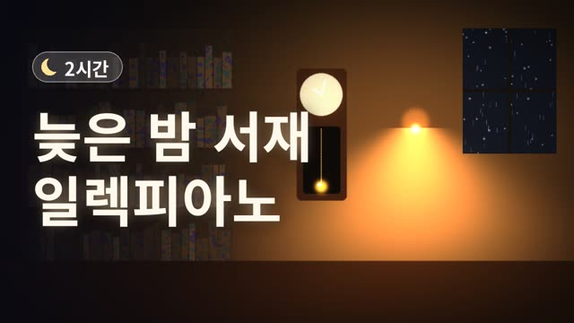
🕰️ 늦은 밤 서재, 시계와 일렉피아노 2시간 | 재즈 느낌 잔잔한 수면음악
2026-11-17 · 120분 · 271MB아동용 아님

업로드 설정 → 시청자층: 아니요, 아동용이 아닙니다 · 카테고리: 음악 · 썸네일: 위에서 받은 이미지
🕰️ 늦은 밤 서재, 시계와 일렉피아노 2시간 | 재즈 느낌 잔잔한 수면음악일렉피아노, 재즈 수면음악, 시계 소리, 수면음악, 힐링음악, lofi, asmr, jazz sleep, 잠 잘오는 음악, 늦은 밤설명 보기
똑딱이는 괘종시계, 가끔 책장 넘기는 소리, 따뜻한 일렉피아노와 비브라폰. 늦은 밤 스탠드 하나 켜 둔 서재에서 잠드는 느낌이에요. 🌙 2시간 동안 끊김 없이 이어지고, 시작은 천천히 커지고 마지막 1분은 소리가 서서히 작아져 잠을 깨우지 않아요. 🎧 1분 30초마다 장면이 천천히 바뀌고, 그 장면의 소리도 함께 바뀝니다: 늦은 밤 서재(책장 넘김·괘종시계) → 촛불(장작) → 비 오는 창(빗소리) → 눈 오는 창가(바람·장작) 🎼 이번 영상의 곡: 새로 작곡한 곡 38곡 — 일렉피아노 파 리디안 4/4박자 ♩=52, 비브라폰 솔 리디안 4/4박자 ♩=57, 펠트 피아노 녹턴 라 도리안 4/4박자 ♩=49 등 🎻 악기: 일렉피아노 · 비브라폰 · 펠트 피아노 💤 화면 밝기를 낮추고, 볼륨은 작게 틀어 주세요. ━━━━━━━━━━ 🎵 음원·영상 안내 이 영상의 음악, 자연의 소리, 배경 영상은 모두 이 채널에서 직접 프로그램으로 작곡·합성·제작한 창작물입니다. 외부 음원이나 샘플, 스톡 영상을 사용하지 않았습니다. 🔔 매주 화요일·금요일 저녁, 새 수면음악이 올라옵니다. 구독하고 함께 푹 자요. #일렉피아노 #재즈수면음악 #시계소리 #수면음악 #힐링음악 #lofi #asmr #jazzsleep
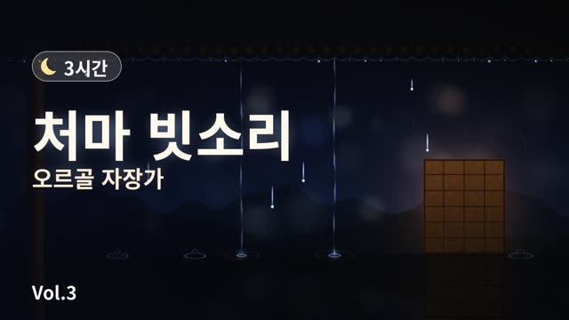
🌧️ 처마 빗소리 오르골 자장가 3시간 | 아기 잠 잘 오는 음악 · 수면음악 Vol.3
2026-11-14 · 180분 · 425MB아동용으로 설정

업로드 설정 → 시청자층: 예, 아동용입니다 · 카테고리: 음악 · 썸네일: 위에서 받은 이미지
🌧️ 처마 빗소리 오르골 자장가 3시간 | 아기 잠 잘 오는 음악 · 수면음악 Vol.3빗소리 자장가, 오르골 자장가, 아기 수면음악, 자장가, 빗소리, 수면음악, 잠 잘오는 음악, 아기 잠재우기, lullaby, rain sounds설명 보기
처마 끝에서 똑똑 떨어지는 빗방울 소리 위로, 매번 새로 작곡한 오르골과 하프 자장가가 천천히 흘러갑니다. 🌙 3시간 동안 끊김 없이 이어지고, 시작은 천천히 커지고 마지막 1분은 소리가 서서히 작아져 잠을 깨우지 않아요. 🎼 이번 영상의 곡: 새로 작곡한 곡 66곡 — 오르골 라 장조 3/4박자 ♩=60, 하프 레 장조 4/4박자 ♩=54, 오르골 미 장조 3/4박자 ♩=55 등 🎻 악기: 오르골 · 하프 💤 화면 밝기를 낮추고, 볼륨은 작게 틀어 주세요. ━━━━━━━━━━ 🎵 음원·영상 안내 이 영상의 음악, 자연의 소리, 배경 영상은 모두 이 채널에서 직접 프로그램으로 작곡·합성·제작한 창작물입니다. 외부 음원이나 샘플, 스톡 영상을 사용하지 않았습니다. 🔔 매주 화요일·금요일 저녁, 새 수면음악이 올라옵니다. 구독하고 함께 푹 자요. #빗소리자장가 #오르골자장가 #아기수면음악 #자장가 #빗소리 #수면음악 #잠잘오는음악 #아기잠재우기
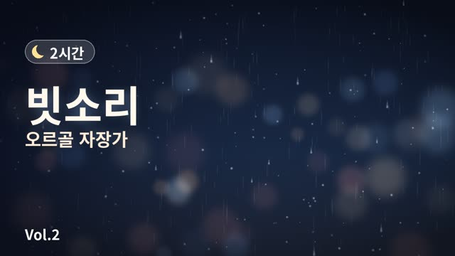
🌧️ 빗소리 오르골 자장가 2시간 | 아기 잠 잘 오는 음악 · 수면음악 Vol.2
2026-11-13 · 120분 · 781MB아동용으로 설정

업로드 설정 → 시청자층: 예, 아동용입니다 · 카테고리: 음악 · 썸네일: 위에서 받은 이미지
🌧️ 빗소리 오르골 자장가 2시간 | 아기 잠 잘 오는 음악 · 수면음악 Vol.2빗소리 자장가, 오르골 자장가, 아기 수면음악, 자장가, 빗소리, 수면음악, 잠 잘오는 음악, 아기 잠재우기, lullaby, rain sounds설명 보기
창밖에 조용히 내리는 빗소리 위로, 매번 새로 작곡한 오르골 자장가가 천천히 흘러갑니다. 🌙 2시간 동안 끊김 없이 이어지고, 시작은 천천히 커지고 마지막 1분은 소리가 서서히 작아져 잠을 깨우지 않아요. 🎼 이번 영상의 곡: 새로 작곡한 자장가 44곡 (도장조 3/4박자 ♩=56, 시장조 3/4박자 ♩=60, 파장조 3/4박자 ♩=62 등) 💤 화면 밝기를 낮추고, 볼륨은 작게 틀어 주세요. ━━━━━━━━━━ 🎵 음원·영상 안내 이 영상의 음악, 자연의 소리, 배경 영상은 모두 이 채널에서 직접 프로그램으로 작곡·합성·제작한 창작물입니다. 외부 음원이나 샘플, 스톡 영상을 사용하지 않았습니다. 🔔 매주 화요일·금요일 저녁, 새 수면음악이 올라옵니다. 구독하고 함께 푹 자요. #빗소리자장가 #오르골자장가 #아기수면음악 #자장가 #빗소리 #수면음악 #잠잘오는음악 #아기잠재우기
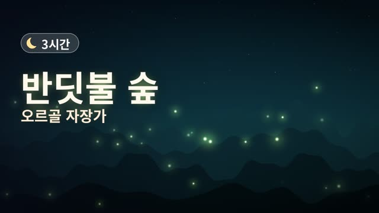
✨ 반딧불 숲 오르골 3시간 | 아이 잠자리 동화 같은 수면음악
2026-11-13 · 180분 · 872MB아동용으로 설정

업로드 설정 → 시청자층: 예, 아동용입니다 · 카테고리: 음악 · 썸네일: 위에서 받은 이미지
✨ 반딧불 숲 오르골 3시간 | 아이 잠자리 동화 같은 수면음악오르골, 자장가, 반딧불, 아기 수면음악, 어린이 자장가, 꿀잠, 수면음악, 잠 잘오는 음악, music box, lullaby설명 보기
반딧불이 춤추는 여름밤 숲. 오르골과 부드러운 피아노가 번갈아 들려주는 새 자장가들입니다. 🌙 3시간 동안 끊김 없이 이어지고, 시작은 천천히 커지고 마지막 1분은 소리가 서서히 작아져 잠을 깨우지 않아요. 🎼 이번 영상의 곡: 새로 작곡한 자장가 63곡 (레장조 3/4박자 ♩=53, 라장조 3/4박자 ♩=56, 시장조 3/4박자 ♩=55 등) 💤 화면 밝기를 낮추고, 볼륨은 작게 틀어 주세요. ━━━━━━━━━━ 🎵 음원·영상 안내 이 영상의 음악, 자연의 소리, 배경 영상은 모두 이 채널에서 직접 프로그램으로 작곡·합성·제작한 창작물입니다. 외부 음원이나 샘플, 스톡 영상을 사용하지 않았습니다. 🔔 매주 화요일·금요일 저녁, 새 수면음악이 올라옵니다. 구독하고 함께 푹 자요. #오르골 #자장가 #반딧불 #아기수면음악 #어린이자장가 #꿀잠 #수면음악 #잠잘오는음악
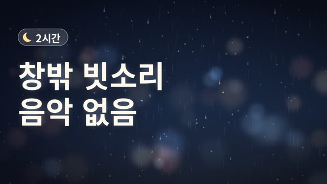
☔ 창밖 빗소리 2시간 | 잠 잘 오는 빗소리 · 공부 · 휴식
2026-11-13 · 120분 · 787MB아동용 아님

업로드 설정 → 시청자층: 아니요, 아동용이 아닙니다 · 카테고리: 음악 · 썸네일: 위에서 받은 이미지
☔ 창밖 빗소리 2시간 | 잠 잘 오는 빗소리 · 공부 · 휴식빗소리, 빗소리 asmr, 잠잘때 빗소리, 수면 빗소리, 공부할때 빗소리, 백색소음, rain sounds, 수면음악, 자연의 소리, 1시간설명 보기
음악 없이 빗소리만 담았습니다. 창문에 부딪히는 빗방울과 멀리서 내리는 비의 낮은 소리가 1시간 동안 이어집니다. 🌙 2시간 동안 끊김 없이 이어지고, 시작은 천천히 커지고 마지막 1분은 소리가 서서히 작아져 잠을 깨우지 않아요. 💤 화면 밝기를 낮추고, 볼륨은 작게 틀어 주세요. ━━━━━━━━━━ 🎵 음원·영상 안내 이 영상의 음악, 자연의 소리, 배경 영상은 모두 이 채널에서 직접 프로그램으로 작곡·합성·제작한 창작물입니다. 외부 음원이나 샘플, 스톡 영상을 사용하지 않았습니다. 🔔 매주 화요일·금요일 저녁, 새 수면음악이 올라옵니다. 구독하고 함께 푹 자요. #빗소리 #빗소리asmr #잠잘때빗소리 #수면빗소리 #공부할때빗소리 #백색소음 #rainsounds #수면음악
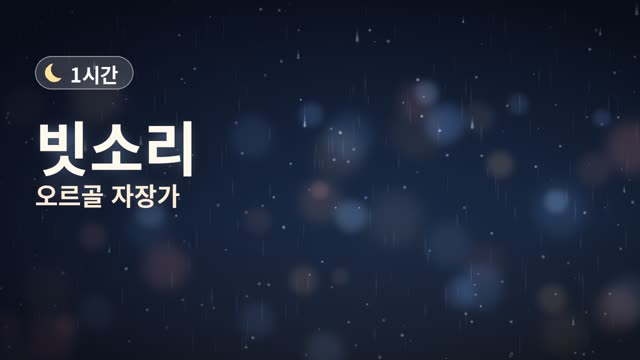
🌧️ 빗소리 오르골 자장가 1시간 | 아기 잠 잘 오는 음악 · 수면음악
2026-11-12 · 60분 · 635MB아동용으로 설정

업로드 설정 → 시청자층: 예, 아동용입니다 · 카테고리: 음악 · 썸네일: 위에서 받은 이미지
🌧️ 빗소리 오르골 자장가 1시간 | 아기 잠 잘 오는 음악 · 수면음악빗소리 자장가, 오르골 자장가, 아기 수면음악, 자장가, 빗소리, 수면음악, 잠 잘오는 음악, 아기 잠재우기, lullaby, rain sounds설명 보기
창밖에 조용히 내리는 빗소리 위로, 매번 새로 작곡한 오르골 자장가가 천천히 흘러갑니다. 🌙 60분 동안 끊김 없이 이어지고, 시작은 천천히 커지고 마지막 1분은 소리가 서서히 작아져 잠을 깨우지 않아요. 🎼 이번 영상의 곡: 새로 작곡한 자장가 22곡 (파장조 3/4박자 ♩=64, 시장조 3/4박자 ♩=61, 라장조 3/4박자 ♩=56 등) 💤 화면 밝기를 낮추고, 볼륨은 작게 틀어 주세요. ━━━━━━━━━━ 🎵 음원·영상 안내 이 영상의 음악, 자연의 소리, 배경 영상은 모두 이 채널에서 직접 프로그램으로 작곡·합성·제작한 창작물입니다. 외부 음원이나 샘플, 스톡 영상을 사용하지 않았습니다. 🔔 매주 화요일·금요일 저녁, 새 수면음악이 올라옵니다. 구독하고 함께 푹 자요. #빗소리자장가 #오르골자장가 #아기수면음악 #자장가 #빗소리 #수면음악 #잠잘오는음악 #아기잠재우기
쇼츠는 본편 장면을 세로로 자른 45초 영상입니다. ⬇ 쇼츠 받기 → 사진 앱에 저장 → YouTube 앱 [＋] → 쇼츠 → 영상 고르기 → 📋 제목·설명 붙여 넣기
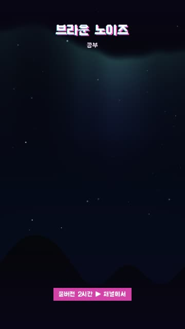
브라운 노이즈 🌌 잠들기 전 1분 | 브라운 노이즈 #shorts
2026-11-25 · 45초
브라운 노이즈 🌌 잠들기 전 1분 | 브라운 노이즈 #shorts낮고 부드러운 브라운 노이즈입니다.
🌙 풀버전(2시간)은 채널에서 끊김 없이 들을 수 있어요.
🔔 구독하면 매주 화·금 새 수면음악 → https://www.youtube.com/channel/UCV2yZPs2ZaFXZE3x-gXfFBg?sub_confirmation=1
음악·소리·영상은 모두 이 채널이 직접 프로그램으로 작곡·합성·제작했습니다.
#브라운노이즈 #brownnoise #백색소음 #수면소음 #집중소음 #숙면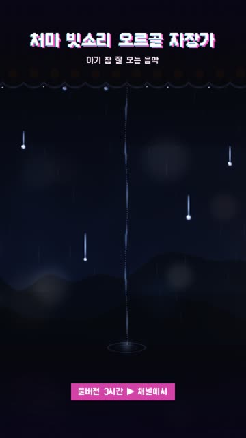
처마 빗소리 오르골 자장가 🌧️ 잠들기 전 1분 | 처마 빗소리 오르골 자장가 #shorts
2026-11-20 · 45초
처마 빗소리 오르골 자장가 🌧️ 잠들기 전 1분 | 처마 빗소리 오르골 자장가 #shorts처마 끝에서 똑똑 떨어지는 빗방울 소리 위로, 매번 새로 작곡한 오르골과 하프 자장가가 천천히 흘러갑니다.
🌙 풀버전(3시간)은 채널에서 끊김 없이 들을 수 있어요.
🔔 구독하면 매주 화·금 새 수면음악 → https://www.youtube.com/channel/UCV2yZPs2ZaFXZE3x-gXfFBg?sub_confirmation=1
음악·소리·영상은 모두 이 채널이 직접 프로그램으로 작곡·합성·제작했습니다.
#빗소리자장가 #오르골자장가 #아기수면음악 #자장가 #빗소리 #수면음악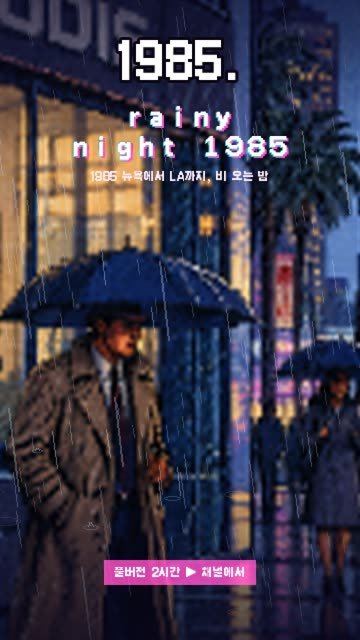
ｒａｉｎｙ ｎｉｇｈｔ １９８５ 🌃 잠들기 전 1분 | 1985 뉴욕에서 LA까지, 비 오는 밤 #shorts
2026-11-19 · 45초
ｒａｉｎｙ ｎｉｇｈｔ １９８５ 🌃 잠들기 전 1분 | 1985 뉴욕에서 LA까지, 비 오는 밤 #shorts1985년, 비 내리는 LA 거리의 네온과 트렌치코트, 창밖으로 비가 내리는 맨해튼의 오래된 사무실, 그리고 노을 속 야자수.
🌙 풀버전(2시간)은 채널에서 끊김 없이 들을 수 있어요.
음악·소리·영상은 모두 이 채널이 직접 프로그램으로 작곡·합성·제작했습니다.
#신스웨이브 #synthwave #드림코어 #dreamcore #빗소리 #rain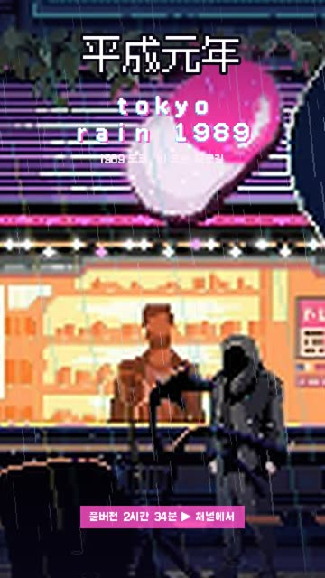
ｔｏｋｙｏ ｒａｉｎ １９８９ 🌧️ 잠들기 전 1분 | 1989 도쿄, 비 오는 퇴근길 #shorts
2026-11-19 · 45초
ｔｏｋｙｏ ｒａｉｎ １９８９ 🌧️ 잠들기 전 1분 | 1989 도쿄, 비 오는 퇴근길 #shorts1989년, 헤이세이가 막 시작된 도쿄.
🌙 풀버전(2시간 34분)은 채널에서 끊김 없이 들을 수 있어요.
음악·소리·영상은 모두 이 채널이 직접 프로그램으로 작곡·합성·제작했습니다.
#시티팝 #citypop #드림코어 #dreamcore #빗소리 #rain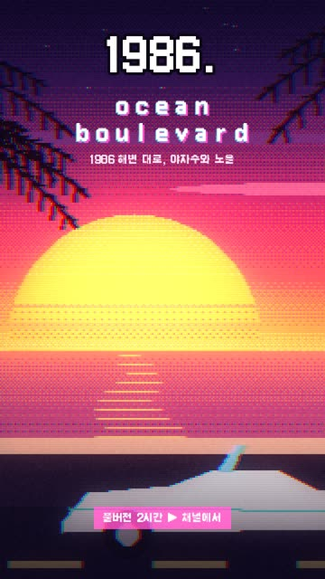
ｏｃｅａｎ ｂｏｕｌｅｖａｒｄ 🌴 잠들기 전 1분 | 1986 해변 대로, 야자수와 노을 #shorts
2026-11-18 · 45초
ｏｃｅａｎ ｂｏｕｌｅｖａｒｄ 🌴 잠들기 전 1분 | 1986 해변 대로, 야자수와 노을 #shorts1986년 여름, 줄무늬 노을 해가 바다로 내려앉는 해변 대로.
🌙 풀버전(2시간)은 채널에서 끊김 없이 들을 수 있어요.
음악·소리·영상은 모두 이 채널이 직접 프로그램으로 작곡·합성·제작했습니다.
#신스웨이브 #synthwave #아웃런 #outrun #80년대 #1980s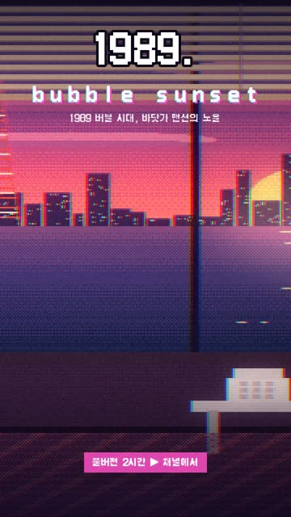
ｂｕｂｂｌｅ ｓｕｎｓｅｔ 🌇 잠들기 전 1분 | 1989 버블 시대, 바닷가 맨션의 노을 #shorts
2026-11-18 · 45초
ｂｕｂｂｌｅ ｓｕｎｓｅｔ 🌇 잠들기 전 1분 | 1989 버블 시대, 바닷가 맨션의 노을 #shorts1989년, 버블 시대의 바닷가 맨션.
🌙 풀버전(2시간)은 채널에서 끊김 없이 들을 수 있어요.
음악·소리·영상은 모두 이 채널이 직접 프로그램으로 작곡·합성·제작했습니다.
#시티팝 #citypop #버블시대 #80년대 #90년대 #레트로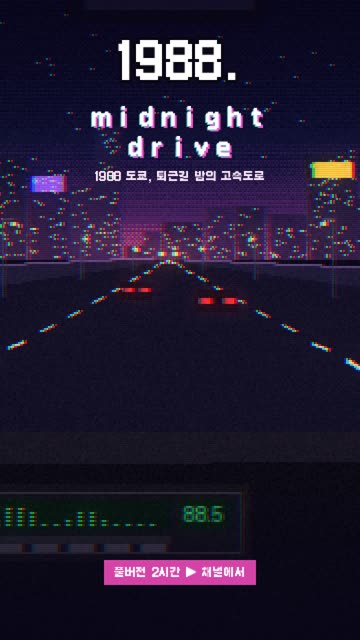
ｍｉｄｎｉｇｈｔ ｄｒｉｖｅ 🌃 잠들기 전 1분 | 1988 도쿄, 퇴근길 밤의 고속도로 #shorts
2026-11-18 · 45초
ｍｉｄｎｉｇｈｔ ｄｒｉｖｅ 🌃 잠들기 전 1분 | 1988 도쿄, 퇴근길 밤의 고속도로 #shorts1988년 도쿄, 야근을 마치고 올라탄 밤의 고속도로.
🌙 풀버전(2시간)은 채널에서 끊김 없이 들을 수 있어요.
음악·소리·영상은 모두 이 채널이 직접 프로그램으로 작곡·합성·제작했습니다.
#시티팝 #citypop #80년대음악 #1980s #버블시대 #베이퍼웨이브